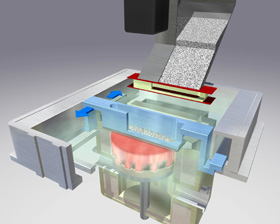

|
|
|
| Home | Previous Page
| Next Page
|
Autofabrication Technologies > Powder Binding > Fusing:
Not: Þemadaki baþlýklarý týklayarak, direkt açýklama sayfalarýný görebilirsiniz.
Toz halindeki ham katmanýn
istenilen noktalarda lazer veya elektron ýþýný gibi enerji
kaynaklarý ile ýsýtýlýp eritilerek ve/veya sinterlenerek birbirine kaynaþtýrýlmasý:
Enerji kaynaðý olarak lazer
kullanýldýðýnda bu teknik genellikle SLS (Selective Laser
Sintering, seçmeli lazer sinterlemesi) ismiyle anýlýr.
- DTM
Corp. (ABD), SLS
- 3D
Systems Inc. (ABD), SLS
- EOS
GmbH, (Almanya), EOSINT
- MCP-HEK
GmbH, (Almanya), SLM
- Phenix
Systems (Fransa),
- Arcam
AB (Ýsveç), EBM
- Speed
Part AB (Ýsveç), SMS
- Concept
Laser GmbH (Almanya), LaserCUSING
- TRUMPF
(Almanya), LF - Laserforming
Not: POM, OPTOMEC
ve AEROMET firmalarýnýn kullandýðý teknolojiler de tozlarý
ýsýtýp eriterek yapýþtýrmasýna raðmen, katman inþasýnýn
tozlarý püskürterek gerçekleþtirilmesi sebebiyle bu teknolojiler,
püskürterek
yýðma kategorisi altýnda incelenmiþtir. |
| Seçmeli
Lazer Sinterlemesi, SLS, (Selective Laser Sintering) |
|
Bu
teknikte, ýsýtýldýðýnda kaynaþabilen toz halindeki bir
inþa hammaddesi (heat fusible powder) ince ve düzgün
bir tabaka halinde yayýlýr. Ardýndan yüzeydeki seçilen
bölgeler lazer ýþýnýyla taranýr. Iþýnýn yüzeye çarptýðý
noktalarda oluþan sýcaklýkla toz malzeme kýsmen eriyerek
ve/veya sinterlenerek
temas halinde olduðu diðer toz taneleri ile kaynaþýr.
Bu iþlemden sonra inþa zarfýnýn tabanýnda bulunan platform,
bir katman kalýnlýðý kadar aþaðý çekilir. Her katmanýn
inþasý için bu iþlemler gerektiði kadar (defalarca)
tekrarlandýktan sonra, inþa süresince doðal bir destek
görevi üstlenmiþ olan serbest tozlar fýrça veya vakum
emici ile manuel olarak temizlenerek üretilen parça(lar)
alýnýr.
Iþýnýn tozlarý daha
az enerjiyle ve daha hýzlý kaynaþtýrabilmesi için inþa
yüzeyi harici ýsýtýcýlarla sýcak tutulur. Ayrýca, metal
tozlarý kullanýldýðýnda kaynaþmayý engelleyici oksitlenme
problemini ortadan kaldýrmak için ortama oksijeni giderici
farklý bir gaz doldurulur.
Ýnþa malzemesi olarak
plastik, metal veya seramik tozlarý kullanýlabileceði
gibi bunlarýn karýþýmlarýndan oluþan kompozit tozlar
da kullanýlabilir. Cam elyaf takviyeli plastik tozlarý
veya üzeri plastik kaplý metal tozlarý buna verilebilecek
örneklerdendir.
|
SLS (Selective Laser
Sintering/ Seçmeli Lazer Sinterlemesi) teknolojisi ilk
olarak Texas Üniversitesi'nden Carl Deckard tarafýndan
bir doktora çalýþmasý olarak geliþtirilmiþ, 1 Aralýk 1987'de,
önceleri Nova Automation ismiyle kurulan DTM Corp. tarafýndan
ise 1992 yýlýnda ticari hale getirilmiþtir. Eylül 2001
tarihinde DTM firmasýný satýn almasýyla ise, SLS sistemleri,
3D Systems firmasýnýn ürün
yelpazesine dahil olmuþtur.
Yukarýda, Carl R. Deckard'ýn
17 Ekim 1986'da baþvurduðu ve 5 Eylül 1989'da aldýðý "Method
and apparatus for producing parts by selective sintering"
baþlýklý ve 4,863,538 no'lu ilk patentine ait iki resim
görülmekte.

Solda, Sinterstation 2000
modelini izleyen ve Temmuz 1996'da üretilen Sinterstation
2500, saðda ise sonraki modeli Sinterstation 2500 PLUS
görülmektedir. SLS cihazlarýnýn 2001'de çýkan son modeli
Vanguard ise 3D Systems
firmasý altýnda incelenmiþtir.
Yukarýda, inþa sonrasý
destek görevi gören tozlarýn fýrça ile temizlenerek, otomobil
ayna parçasýna ait bir prototipin Sinterstation 2500 cihazýndan
çýkarýlýþý görülmektedir (ref: www.ktechnik.de)
| Solda,
polyamide tozundan bir seferde tek parça halinde
inþa edilmiþ, iki plaka arasýndaki 6 spiral yaydan
oluþan fonksiyonel bir numune görülmektedir. |
|
|

DTM firmasýnýn SLS teknolojisi ile "nylon" tozu kullanýlarak
üretilmiþ olan bu motorlu testerenin plastik gövdesi direkt
olarak testlerde kullanýlabilecek mukavemete sahiptir. |

"Polycarbonate" tozu ile üretilen modeller hassas
döküm teknolojisi için de uygundur. Arka planda model,
önde ise dökümle elde edilmiþ metal parça görülmekte. |
Toplam 3 parçadan oluþan bu anahtar, tek seferde cihaz
içinde inþa edilmiþ ve hareketli parçalarýn arasýndaki
serbest tozlar temizlendikten sonra çalýþýr duruma gelmiþtir! |
DTM
Rapid Tool (hýzlý kalýp) teknolojisi:
Kalýp önce, plastik kaplý
özel metal tozlarý (LaserForm ST-100)
kullanýlarak inþa edilir (lazer ýþýný, plastik tabakayý
eriterek metal tozlarýný geçici olarak birbirine yapýþtýrýr).
Ýnþa bitiminde "Green Part" olarak adlandýrýlan parça
özel bir fýrýnda önce ýsýtýlarak plastik yapýþtýrýcýdan
arýndýrýlýr (Debinding Process), ardýndan parça sýcaklýk
altýnda bir süre daha bekletilerek sinterlenir.
Sinterleme sonrasýnda gözenekli çelik bir kalýp oluþmuþtur
ve parçanýn bu durumu "brown part" olarak adlandýrýlýr.
Mukavemeti arttýrmak için kalan boþluklara yine fýrýn
içinde erimiþ bakýr (yeni versiyonda bronz) emdirilir.
Pamuðun veya süngerin suyu emdiði gibi gözenekli çelik
de bakýrý kolayca emer. 2-3 haftada tamamlanabilen bu
iþlemler sonrasýnda tam yoðunluða eriþmiþ parça (fully
dense part) plastik enjeksiyonda kalýp olarak kullanýldýðýnda
100.000 parçaya kadar basabilecek mukavemete sahiptir.

Saðda, DTM Rapid
Tool (hýzlý kalýp) teknolojisi ile üretilmiþ plastik enjeksiyon
kalýplarý: Kalýp içindeki bakýrýn ýsý iletimini arttýrmasý
sayesinde kalýbýn çalýþma sýrasýnda soðumasý daha kolay
olur. Ayrýca kalýp içine inþa sýrasýnda yüzeye paralel
þekilde eðimli soðutma kanallarý da býrakýlabilir. |
Eylül 2001 tarihinde
DTM Corp. firmasýný satýn almasýyla,
SLS sistemleri, 3D Systems firmasýnýn ürün yelpazesine
dahil olmuþtur.
3D Systems, Vanguard
si2 ve Vanguard si2 HS modellerini sunmaktadýr.
Bu yeni modelde, DTM'in önceki modellerinde olduðunun
aksine döküm kumu kullanma seçeneði bulunmamaktadýr (buna
sebep olarak döküm maçasý imalat uygulamalarýnýn çok kýsýtlý
olmasý gösterilmiþtir). |
|
Solda Vanguard,
saðda ise cihazýn çalýþma þekli görülmektedir.
Bu resmi daha büyük görmek için üzerini týklayýnýz
(büyük resim, önceki modellere ait olduðundan, dikkat
edileceði üzere inþa odasý silindirik bir yapýya sahiptir).
Cihazýn ortasýnda yüzeydeki ince toz tabakasýnýn lazerle
ýsýtýlýp eritildiði ve/veya sinterlendiði bir inþa odasý
(build chamber) vardýr. Ýnþa odasýnýn iki yanýnda, eksildikçe
aþaðýdaki bir piston ile seviyesi yükseltilen toz kartuþlarý
bulunmaktadýr. Ýki toz kartuþu arasýnda gidip gelen
bir düzleyici merdane (leveling roller) yardýmýyla tozlar
inþa yüzeyine ince bir tabaka halinde yayýlýr ve ardýndan
yukarýda bulunan optik düzenek üzerinden yöneltilen
lazer ýþýný ile katman inþasý yapýlýr. Her katmanýn
tamamlanmasýnýn ardýndan, inþa odasýnýn tabanýnda bulunan
bir piston, eklenen katman kalýnlýðýný kompanse etmek
için biraz daha aþaðý çekilir. Bu iþlemler gerekli tüm
katmanlar inþa edilinceye kadar tekrarlanýr.
Yukarýda SLS prosesini
gösteren bir resim daha görülmektedir (Ref:
Materialise Prototyping April 2003). Lazerin
daha az bir enerji ile daha kolay ve hýzlý bir þekilde
yüzeydeki tozlarý eritebilmesi için kýzýlötesi radyasyonlu
ýsýtýcýlarla yüzey sürekli ýsýtýlýr ve kýzýlötesi sensörlerle
yüzey sýcaklýðý sürekli kontrol edilerek tozlarýn ergime
sýcaklýðýna yaklaþýlmasý engellenir. Bu teknik resimde
"radiation heater + atmosphere control" baþlýðý
altýnda belirtilmiþtir.
Kullanýlan inþa
malzemesinin plastik veya metal olmasýna baðlý olarak
25 veya 100 Watt gücünde CO2
lazer kaynaðý kullanan bu cihaz, tabaný 370 x 320mm
yüksekliði ise 445mm olan bir inþa zarfýna sahiptir.
Katman
kalýnlýðý: High Resolution Mode: 0.10 mm, Standart Mode:
0.15 mm
Ýnþa malzemeleri:
Farklý uygulamalar için
geliþtirilen ve CastFormT PS, DuraFormT PA & GF,
LaserFormT ST-100, SOMOS® 201 markalarýyla piyasaya
sürülen toz inþa malzemeleri aþaðýda açýklanmýþtýr:
CastFormT
PS, Hassas döküm
için mum model imalatýnda kullanýlýr. Cihazdan ilk çýktýðýnda
%45 yoðunlukta olan modellere kullaným öncesi döküm
mumu emdirilmesi gerekir. Bu malzeme bazý küçük farklýlýklarla
normal döküm mumunda olduðu gibi otoklav, düþük sýcaklýklý
fýrýnlarda veya vakum plaster döküm tekniklerinde kullanýlabilir.
Alüminyum, magnezyum ve çinko gibi düþük ergime sýcaklýklý
metallerin dökümünde baþarýyla kullanýlan bu malzme,
%0.02'den daha düþük kül oraný sayesinde titanyum gibi
reaktif metallerin dökümünde de baþarýyla kullanýlabilir.
DuraFormT
polyamide (PA), Zorlu fonksiyonel testlere dayanabilecek
saðlam termoplastik protototiplerin inþasýnda kullanýlýr.
Bu cihazla esneyerek çalýþan menteþeler (living hinge)
veya esneyerek klitlenen baðlantý elemanlarý (snap fit
connections) imal edilebilir. Cerrahi aletlerin prototiplerinde
de kullanýlabilecek bu malzeme, otoklavda sterlize edilmeye
müsaittir.
DuraFormT glass-filled
(GF), Önceki malzemeye oranla daha yüksek mukavemete
ve elektrik yalýtkanlýðýna sahip cam takviyeli bu malzemeden
üretilen prototipler 100°C sýcaklýkta çalýþmaya dayanýklýdýr.
LaserForm
ST-100, Rapid Tool
(hýzlý kalýp) prosesi için geliþtirilmiþ, üzeri polimer
kaplý 420 paslanmaz çelik tozlarýndan müteþekkildir.
| Ýlk aþamada plastik
tozlarýyla birbirine tutturulan metal tozlarý daha
sonra sinterleme ve kalan gözeneklere bronz emdirme
sonrasýnda P20 çeliði özelliklerine |
|
Benzer bir mekanik dayanýma
ulaþýr ve plastik enjeksiyonda kalýp olarak kullanýldýðýnda
100.000 adete kadar parça basýmýna dayanabilir. Bu mazleme,
mühre ve kalýp üretimi yanýnda, hassas dökümle elde
edilenlerden daha yüksek hassasiyete sahip prototip
metal parçalar inþa etmek için de kullanýlabilir.
SOMOS 201: Bir
tür termoplastik elastomer olan bu malzeme ile lastik
benzeri performansa sahip, karmaþýk þekilli prototipler
inþa edilebilir.
| Ýnþa sonrasý emdirilebilen
poliüretan dolgu malzemesi kullanýldýðýnda ise yüzey
kalitesi artar ve basýnç altýnda sýzdýrmazlýk saðlanýr.
Saðda, Reebok için üretilmiþ bir prototip |
|
ayakkabý tabaný görülmektedir.
Bu yöntemle ayný zamanda poliüretanýn rengine baðlý
olarak istenilen renkte prototipler elde edilebilir.
Not:
01-10-2002 tarihli basýn açýklamasýna göre 3D Systems
2003'ün ilk yarýsýna kadar bazý yeni malzemeler çýkaracak:
1- Ateþe karþý dayanýklý yeni bir tür Nylon tozu,
2- LaserForm ST 100'den daha geliþtirilmiþ bir çelik
tozu,
3- A6 çelik tozu; (3D
Keltool'dan yapýlan teknoloji transferi ile bu yeni
malzeme elde edilmiþtir),
4- Alüminyum tozu. Bu malzeme Avusturalya'daki "University
of Queensland" ve "UniQuest" Üniversitelerindeki
ortak çalýþmalarýn sonucunda geliþtirilmiþtir. Bu malzemeyle
Al pres döküm ile imal edilecek parçalarýn prototipleri
direkt olarak SLS ile inþa edilebilecek.
Iþýkla Kür > Tarayarak
> 3D
Systems/ SLA Serisi
Harç Yýðma > Püskürterek
> 3D
Systems/ ThermoJet
|
1989 yýlýnda, Zeiss (Almanya)
firmasýnda yapýlan Ar-Ge çalýþmalarýnýn sonucu olarak kurulan
EOS Gmbh, 1991 yýlýnda Avrupa'daki ilk SL cihazý üreticisi
olmuþtur.
1994 yýlýnda ise plastik
tozu sinterleyen, bu kategorideki ilk cihazý olan EOSINT
P modelini piyasaya sürmüþtür.
Sonraki geliþmeler tarih
sýrasýyla aþaðýda verilmiþtir:
1995, Dünyadaki ilk direkt
metal lazer sinterleme (DMLS, Direct Metal Laser
Sintering) cihazý olan EOSINT M 250 modelini piyasaya
sürmüþtür. Bu model, inþa hammaddesi olarak düþük ergime
sýcaklýðýna sahip bir metal alaþýmýnýn tozlarýný kullanýyordu.
EOS Gmbh ayný yýl dünyadaki ilk döküm kumu sinterleyen
EOS S 700 modelini de piyasaya sürmüþtür. Bu cihaz, direkt
olarak metal döküm kalýbý ve/veya maçasýný DCP
(Direct Croning Process) ticari ismiyle anýlan teknikle
inþa etmektedir.
1997, STEREOS
serisi ürünleriyle bir süre 3D Systems'in Avrupa'daki
en büyük rakibi olan EOS Gmbh, uzun süren patent davalarý
sonucunda bu cihazlarýn üretimini durdurmuþ ve patent
haklarýný 3D Systems'e devretmiþtir. Yapýlan anlaþmayla,
3D Systems ise seçmeli sinterleme (SLS) konusunda almýþ
olduðu bazý patent haklarýný EOS'a (EOSINT cihazlarýnda
kullanýlmak üzere) devretmiþtir.
1998, Dünyadaki ilk
çelik tozunu direkt olarak sinterleyebilen EOSINT M Xtended
modelini piyasaya sürmüþtür.
1999,
EOSINT P modelinden daha yüksek hýza ve büyük inþa zarfýna
sahip EOSINT P 360 modelini üretmiþtir.
EOS, 2000 yýlýnda, Dünya'daki
ilk çift lazerli plastik tozu sinterleme cihazý olan EOSINT
P 700 modelini piyasaya sürmüþtür.
2001 yýlýnda 3D Systems'in
EOS'un en büyük rakibi DTM firmasýný
satýn almasýyla EOS ve 3D Systems
tekrar birbirlerine rakip konuma gelmiþlerdir.
EOS, Þubat 2002'de EOSINT
P 360'dan %30 daha hýzlý olan ve dýþ
görünümü P 360 ile ayný olan P
380 modeli piyasaya sürdü.
Aþaðýda güncel EOSINT
modelleri görülmektedir:
|
|
|
|
|
|
P 380
Plastik sinterleme
|
EOSINT P 700 Plastik
sinterleme (çift lazerli)
|
M 250 Xtended
Metal sinterleme
|
S 700 Döküm
kumu sinterleme (çift lazerli)
|
|
EOSINT
P 380:
Ýnþa zarfý: 340 x 340 x 620 mm. Lazer gücü ve tipi:
50W CO2.
Kullanýlan Malzemeler: Hassas döküm modelleri için polystyrene,
fonksiyonel prototipler için polyamide ve glass-filled
polyamide. Ýnþa hýzý (malzemeye baðlý): 10-25mm
yükseklik/saat. Katman kalýnlýðý (malzemeye baðlý):
0.1-0.2mm.
EOSINT P 700: Ýnþa zarfý: 700 x 380 x 580 mm.
Lazer gücü ve tipi: 2 adet 50W CO2. Kullanýlan
Malzemeler: Hassas döküm modelleri için polystyrene,
fonksiyonel prototipler için polyamide. Ýnþa
hýzý (malzemeye baðlý): 10-25mm yükseklik/saat. Katman
kalýnlýðý (malzemeye baðlý): 0.1-0.2mm.
EOSINT M 250 Xtended: Ýnþa zarfý:
250 x 250 x 185 mm. Lazer gücü ve tipi: 200W CO2.
DMLS prosesinde kullanýlan Malzemeler: DirectToolTM
(Direkt Kalýp) inþasý için DirectSteelTM
50-V1 (çelik tozu), DirectMetalTM 100-V3
(lastik vulkanizasyon kalýplarý için düþük ergime sýcaklýklý
metal alaþým tozu) ve DirectMetalTM 50-V2
(yüksek sýcaklýktaki epoksi reçine emdirilebilen ve
termoplastik enjeksiyon kalýplarýnda kullanýlabilecek
düþük ergime sýcaklýklý metal alaþým). Ýnþa hýzý (malzemeye
baðlý): 2-15mm3/saniye. Katman kalýnlýðý
(malzemeye baðlý): 0.05-0.1mm. DirectToolTM
EOSINT S 700: Ýnþa zarfý: 720 x 380 x 400 mm.
Lazer gücü ve tipi: 2 adet 50W CO2. Kullanýlan
Malzeme: Reçine kaplý döküm kumu. Ýnþa hýzý (malzemeye
baðlý): en fazla 1 Litre/saat. Katman kalýnlýðý (malzemeye
baðlý): 0.2mm.
|
Cihazýn iþleyiþ mekanizmasý:
EOSINT cihazlarý DTM'de
olduðu gibi bir merdane ile tozlarý yaymak yerine bir
huni ile yukarýdan tozlarý dökerek ayný iþlemi yapar:
1-
Lazer
2- Iþýn geniþleticisi
3- Tarayýcý
4- Mercekler,
5- Toz kaplayýcý
6- Ýnþa kabý
7- Gevþek toz veya kum
8- Platform
9- Ýnþa edilen parça
10- Toz/kum haznesi |
| Parça, aþaðýda
sýrasýyla gösterilen 4 iþlemin tekrarlanmasýyla inþa edilir:
|
|
|
|
|
|
|
1- Lazer taramasýyla
katmandaki tozlar ýsýyla birleþtirilir.
|
2- Platform bir katman
kalýnlýðý kadar aþaðý çekilir.
|
3- Yüzeye yeni bir tabaka
toz yayýlýr.
|
4- Hazneden kaplayýcýya
toz takviyesi yapýlýr
|
Uygulama örnekleri: (resimleri
daha büyük görmek için üzerlerini týklayýnýz)
|
|
|
|
|
|
|
|
|
1
|
2
|
3
|
4
|
5
|
6
|
1- EOSINT P 700 cihazýnda
PA 2200 malzemesiyle tek parça halinde inþa edilmiþ fonksiyonel
otomobil merkez konsolu. (Hofmann Modelbau, Almanya)
2- EOSINT M 250 Xtended
cihazýnda DirectMetal 50-V2
malzemesiyle direkt olarak inþa edilmiþ, bir tahrik motoru
kutusuna ait tam fonksiyonel metal prototip. Seri imalatta
pres metal döküm ile imal edilmek üzere tasarlanmýþ bu
parça Alman IMIG firmasý için yapýlmýþtýr.
3- EOSINT M 250
Xtended cihazýnda
DirectSteel 50-V1 malzemesiyle çelik tozlarýndan direkt
olarak inþa edilmiþ diþli kasnak prototipi: Seri imalatta
toz metal sinterleme (PM) tekniðiyle imal edilmek üzere
Volvo Car Corp. (Ýsveç) tarafýndan tasarlanmýþ bu parça,
Rapid Product Innovations (Finlandiya) firmasý tarafýndan
test sürüþleri için 1 günde tamamlanmýþtýr.
4- EOSINT tarafýndan inþa
edilmiþ bir plastik enjeksiyon kalýbý mühresi. EOS firmasý
rakiplerinden farklý olarak, düþük ergime sýcaklýðýna
sahip metal alaþým tozu kullanýr. Bu sayede DTM'de olduðu
gibi ayrýca fýrýnda ikinci bir sinterlemeye ihtiyaç kalmaz.
Ama bakýr emdirme tekniði burada da uygulanýr.
5- EOSINT M 250 kullanýlarak
DirectTool metodu ile inþa edilmiþ metal kalýp ve bununla
üretilmiþ bir plastik "direksiyon kolonu elektrik konnektörü".
Malzeme: DirectMetal 50-V2. Italyan PIDA firmasý için
yapýlan bu prototip enjeksiyon kalýbýna %30 cam takviyeli
PA malzme basýlmýþ ve projede %50 zaman tasarrufu saðlanmýþtýr.
6-
EOSINT S 700 ile inþa edilen "DirectCast" döküm kalýbý
ve maçalarý kullanýlarak kum dökümle alüminyum alaþýmýndan
(AlSi9Cu3, 226) üretilmiþ, 24 valfli bir otomobil motoruna
ait V6 silindir kafasý. Ýnþa malzemesi olarak Lasercron
döküm kumu kullanýlan bu çalýþma, VAW Südalumin ve CAD-CAM
Becker isimli Alman firmalarý tarafýndan 3 haftada tamamlanmýþtýr.
Not: Döküm kumu üzerine kaplanmýþ olan reçine lazer ýþýnýn
sýcaklýðý ile eritildikten sonra yeterli mukavemette yapýþma
saðlanamadýðý için, inþa sonrasý kalýbýn bir süre bir
fýrýnda piþirilmesi gerekir.
Iþýkla Kür > Tarayarak
> EOS GmbH
|
|
SLM
(Selective
Laser Melting / Seçmeli Lazerli Eritme)
teknolojisi orijinal olarak Almanya'da Fraunhofer
Institute (www.fhg.de)
isimli bir araþtýrma merkezi tarafýndan geliþtirilmiþ
ve F&S
GmbH
(www.fockeleundschwarze.de)
tarafýndan ticari hale getirilmiþtir.
Fockele
& Schwarze firmasý iki
fizikçi olan Dr. Matthias Fockele ve Dr. Dieter Schwarze
tarafýndan
1990'da kurulmuþtur. 1992 yýlýnda kurduklarý F&S
Stereolithographietechnik GmbH
ise 1994'de ilk ticari ürüne sahip olmuþtur.
Haziran
2002 tarihinde yapýlan bir anlaþmayla ise tüm SLM cihazlarýnýn
satýþ, pazarlama ve teknik desteði
MCP-HEK GmbH
tarafýndan yapýlmaya baþlanmýþtýr.
 Çeþitli
metal veya seramik tozlarýný direkt olarak %100'e yakýn
yoðunlukta sinterleyebilen MCP-RealizerSLM
modeli autofabrication cihazý þu teknik özelliklere sahiptir: Çeþitli
metal veya seramik tozlarýný direkt olarak %100'e yakýn
yoðunlukta sinterleyebilen MCP-RealizerSLM
modeli autofabrication cihazý þu teknik özelliklere sahiptir:
Lazer: 100W ve 0.03mm spot çapýna infrared (IR) Katman
kalýnlýðý: 0.05mm
Ýnþa hýzý: 5cm3 çelik tozu/saat
Ýnþa zarfý: 250x250x240
mm
Yüzey
Pürüzlülüðü: 10-30µm
Ýnþa malzemeleri: Çinko, bronz, paslanmaz çelik, kalýp
çeliði, titanyum, krom-kobalt, silikon karbit, alüminyum
oksit tozlarý ve MCP'ye ait düþük ergime sýcaklýðýna
sahip özel alaþýmlar.
Genellikle
direkt metal kalýp veya prototip parça imalatýnda kullanýlabilen
bu sistemle yapýlan bazý uygulamalar aþaðýda görülmektedir:
| Solda,
metal tozlarýyla SLM cihazýnda inþa edilmiþ 3 kW
kapasiteli bir eþanjör görülmektedir. Kanallar 1
x 2.5 mm kesite ve 30 mm boya sahiptir. Saðda,
içinde soðutma kanallarý býrakýlarak inþa edilmiþ
metal bir kalýp parçasýnýn 3D CAD resmi, kendisi
ve kesiti alýnmýþ hali görülmektedir. |
 |
|
PHENIX 900 cihazý
250mm çapýnda ve 300mm yüksekliðinde bir inþa zarfýna
sahiptir. Herhangi bir baðlayýcý gerektirmeden her türlü
seramik ve metal tozunu sinterleyebilen bu sistemde, ek
iþlemler öncesinde +/-50 µm hassasiyette ve 10-15 MPa
dayanýmda (seramik tozu ile) parçalar elde edilebilir.
Ýnþa sonrasý ayrýca uygulanabilecek ek sinterleme ve infiltrasyon
(kalan gözeneklere erimiþ metal gibi farklý bir malzeme
emdirme) sýrasýnda büzülmeden dolayý hassasiyet biraz
düþer ama mukavemet ise önemli ölçüde arttýrýlýr.

Solda,
PHENIX 900 cihazý görülmektedir. Saðda, cihazýn
parçalarý açýklanmýþtýr:
1- Lazer (40 W Diode-pumped Nd: YAG)
2- Katman hazýrlama ve inþa sistemi
3- Fýrýn bölgesi (900 °C'ye varan sýcaklýk ve kontrollü
atmosfer) Lazerin tozlarý daha az enerjiyle ve daha
hýzlý kaynaþtýrabilmesi için inþa yüzeyi kullanýlan
tozun sinterlenme sýcaklýðýna yakýn bir sýcaklýkta tutulur.
4- Silindirik parça inþa odasý Ø 250 mm - H 300 mm
5- Toz besleme tanký
6- Kontrol ve kumanda ünitesi
Ýnþa hýzý 1 ile 10 mm3/s arasýnda
Üretim hasassiyeti: class 9-10
Phenix
900 Þubat 2002'den itibaren ticari hale gelmiþtir.
|
|
Bu
teknikte, diðerlerinden farklý olarak, katmaný oluþturmak
için yaklaþýk 0.1mm kalýnlýðýnda serilen metal tozlarý,
lazer yerine elektron ýþýný ile eritilerek kaynaþtýrýlýr.
Arcam tarafýndan EBM (Electron Beam Melting
/ Elektron Iþýnýyla Eritme) olarak adlandýrýlan bu yöntemde,
oksitlenmeyi önlemek ve elektron ýþýnýnýn absorbe olmasýný
engellemek için inþa odasý vakum altýnda býrakýlmýþtýr.
TV/ CRT katot ýþýný tüplerinde olduðu gibi elektron
ýþýný istenilen noktaya yönlendirilir. Elektronlarýn
hýzý ýþýk hýzýnýn yarýsý civarýndadýr...
Solda,
3D CAD verisi, ortada, katmanlar halinde elektron ýþýnýyla
inþa yöntemi, saðda ise bu yöntemle inþa edilmiþ metal
parça görülmekte.
Bu
konudaki ilk çalýþmalar 1993 yýlýnda Ralf Larson* adýndaki
Ýsveçli araþtýrmacýnýn elektrik iletkeni tozlarýn elektron
ýþýný ile eritilerek kaynaþtýrýlmasý konusunda 1993
yýlýnda aldýðý patentle baþlamýþ, daha sonralarý 1995'de
Gothenburg'da, Chalmers Teknoloji Üniveristesi'nde ortak
çalýþmalarla devam etmiþtir. Ardýndan bu teknolojiyi
ticari hale getirmek için 1997'de Arcam AB firmasýnýn
kurulmuþtur. Solda, geliþtirme safhasýnda olan EBM cihazýnýn
bir fotoðrafý görülmektedir. Arcam, teknoloji geliþtirme
çalýþmalarýný 1998 sonrasýnda Ericsson Radio Access,
Volvo Car Corporation, Caran Modeller & Prototyper
AB gibi stratejik ortaklarýyla birlikte yürütülmüþtür.
EBM
teknolojisinin 2001 yýlýnda ticari olmasý beklenmekteydi
fakat oluþan gecikme sonrasýnda solda görülen EBM S-12
modeli ilk defa 19.11.2002 tarihinde duyurulabildi.
4-7 Aralýk tarihlerinde Euromold 2002 fuarýnda ilk defa
sergilenen bu sistemin teknik özellikleri aþaðýda verilmiþtir:
Ýnþa zarfý: 200 x 200 x 160 mm
Katman kalýnlýðý: 0.05-0.2 mm (malzemeye baðlý)
Hassasiyet: +/-0.4 mm
Eritme hýzý: 0.3-0.5 m/s (malzemeye baðlý)
Elektron
tabancasý 3 silindirik üniteden müteþekkildir; Alt ünite,
suyla soðutulan bir tabandan ve ýþýný odaklaþtýran bir
mercek sisteminden oluþur. Orta ünitede anod, üst ünitede
ise yüksek voltajla çalýþan bir katot ve kontrol elektrodu
bulunmaktadýr.
* Ralf
Larson ayný zamanda
Sparx
AB ve Speed Part AB firmalarýnýn
da kurucusudur.
|
|
Plastik
tozlarý için geliþtirilen bu teknoloji, benzerlerinin
aksine, lazer veya elektron ýþýnýyla noktasal olarak
sinterleme yapmak yerine daha düþük kurulum ve iþletme
maliyetiyle daha yüksek üretim hýzý potansiyeline
sahip SMS (Selective Mask Sintering) / "Maskeyle
Seçmeli Sinterleme" tekniðini kullanmaktadýr.
Bu sistem, birçok patent ve firma sahibi Ýsveçli mucit
Ralf Larson* tarafýndan geliþtirilmiþtir.
Yukarýda
solda, SMS sisteminin çalýþma prensibi,
saðda ise yapým aþamasýndaki bir cihaz görülmektedir
IR-Lamps: Kýzýlötesi (IR, Infra Red) ampüller,
IR maske inþa yüzeyine yerleþtikten sonra kýsa bir
süre yanarak ince bir katman tozun eriyerek birbirlerine
kaynaþmasýný saðlar.
Printed Mask: Fotokopi makinelerinde ve lazer
yazýcýlarda kullanýlan "electrophotography"
yöntemiyle beyaz toner kullanýlarak yazýlmýþ maske
(bu tür bir maske autofabrication cihazlarýnda ilk defa
Cubital
tarafýndan kullanýlmýþtý). Maske, inþa yüzeyine
çok yakýn olabilmesi için cam plakanýn alt yüzünde
oluþtutulur, bu sayede yukarýdan gelen kýzýlötesi
ýþýmanýn saçýlmasý engellenir. Iþýmayý kolay yansýtmasý
için beyaz renkli maske kullanýlmaktadýr (resimde
görülebilmesi için gri renkli gösterilmiþtir). Maske
camý her katman inþa edildikten sonra dýþarý çekilerek
önceki maskeye ait tozlar bir kanatçýkla silindikten
sonra üzerine yeni maske bir merdaneden aktarýlýr.
Melted Surface: Maskeden geçen ýþýnlarýn
enerjisi ile inþa yüzeyindeki eritilmiþ bölge kýrmýzý
renki gösterilmiþtir.
Powder Building Tank: Kullanýlan inþa tozlarýnýn
bulunduðu inþa tanký. Erimeyen tozlar destek iþlevi
görür.
Yukarýdaki çizimde gösterilmemiþ olan ve inþa odasýnýn
hemen yanýnda bulunan bir tankta ise ham toz depolanmýþtýr.
Tankýn altýnda bir piston her tabaka inþa edildikten
sonra ham tozlarý bir miktar yukarý kaldýrýr ve
maskeyle birlikte hareket eden bir kanatçýk tozlarý
inþa bölgesindeki yüzeye yayar.
Speedpart
web sitesinde bu prosesi detaylý olarak gösteren
5.2MB büyüklüðünde bir MPEG animasyon mevcuttur.
*Ralf
Larson, 1991'de kurduðu Sparx AB firmasý bünyesinde
tabaka yýðma prensibine göre çalýþan HotPlot
isimli ilk autofabrication cihazýný geliþtirmiþ fakat 1995'de
bu firmanýn faaliyetlerini ve HotPlot satýþlarýný
durdurmuþtu. Ardýndan ýsýtarak toz baðlama prensibine
göre çalýþan autofabrication cihazlarý üzerine araþtýrma
yapmaya baþlayan Larson, böylece
tozlarý elektron ýþýnýyla eritme teknolojisine dayalý
autofabrication cihazlarý geliþtiren Arcam
AB firmasýnýn da kurucularýndan olmuþtur. (Larson
ve kurucusu olduðu þirketler hakkýnda www.swedecopter.se
adresinden ayrýntýlý bilgi alýnabilir)
|
Concept Laser GmbH,
2000 yýlýnda Frank Herzog tarafýndan Lichtenfels þehrinde
kurulmuþtur. SLS teknolojisini inceleyen ve geliþtiren
Herzog ve ekibi, 40 yýllýk geçmiþe sahip Hofmann Group'un
desteðini alarak birçok yenilik içeren M3 cihazýný ortaya
çýkartmýþtýr. Ýlk üretilen cihazlar test amaçlý olarak
Hofmann Group'ta çalýþtýrýlmaktadýr. LaserCUSING
markasý, "Concept" ve "Fusing"
kelimelerinin birleþimiyle oluþturulmuþtur.
|
|
|
|
M3
linear
|
M3
linear / LaserCUSING ünitesi
Ýnþa
zarfý: 250 x 250 x 250 mm
Minimum
katman kalýnlýðý: 0,02mm
|
Yukarýda, solda görülen
M3 linear (ilk ticari ismi Concept M3 idi) cihazý,
deðiþtirilebilir alt üniteleri sayesinde tek lazer sistemi
ile LaserCUSING, lazer markalama, lazerle 3D oyma olarak
3 farklý iþ yapabilir. Yukarýda saðda, LaserCUSING ünitesi
ayrý olarak gösterilmiþtir. Bu ünite paslanmaz çelik
ve sýcak
iþ kalýp çeliði (Hot work tool steel) gibi metallerin
tozlarýný asal gazlý bir atmosfer altýnda direkt olarak
%100 yoðunlukta sinterleyebilir.
Firmanýn patentine sahip
olduðu ve geliþtirilmesi süren "combined processing"
yöntemi sayesinde, her katmanýn oluþturulmasýnýn ardýndan
üst veya yan yüzeyler lazerle oyularak yüksek yüzey
kalitesine ulaþýlabilmektedir.
Saðda
görülen M1 cusing modeli cihaz ise 2005
yýlýnda ticari hale gelmiþtir ve sadece metal tozu sinterleme
için geliþtirilmiþtir.
M1 cusing
teknik
özellikleri:
- Ýnþa
zarfý: 120 x 120 x 200 mm
- Katman
kalýnlýðý: 0,02 - 0,08 mm
- Lazer:
Diode Pumped Solid State Laser
- Lazer
gücü: 100W
|
| Saðda, LaserCUSING ünitesi
kullanýlarak inþa edilmiþ metal parçalardan iki örnek
görülmektedir. Özel geliþtirilmiþ bir ýþýn tarama veya
pozlama stratejisi (exposure strategy) sayesinde büyük
metal parçalar deformasyon olmadan inþa edilebilir. Deðiþken
çaplý lazer sayesinde büyük alanlar hýzla taranabildiði
gibi lazer çapý küçültüldüðünde ince detaylar ve keskin
köþeler de inþa edilebilir.. |
|
Aþaðýda,
kalýp yüzeyiyle uyumlu geometriye sahip soðutma kanallarýya
(conformal cooling) birlikte inþa edilmiþ kalýp mührelerine
(insert) ait örnekler görülmektedir. Kanallarýn görülebilmesi
için inþa sonrasýnda parçalarýn kesiti alýnmýþtýr:
|
|
|
|
Boyut:
50 x 58 x 96 mm
Malzeme: CL 50 WS
(sýcak iþ kalýp çeliði - Hot work tool steel)
Sertlik: 54 HRC
Üretim süresi: 33 saat
|
Boyut:
52 x 40 x 55 mm
Malzeme: CL 50 WS
(sýcak iþ kalýp çeliði - Hot work tool steel)
Sertlik: 54 HRC
Üretim süresi: 29 saat
|
|
|
Almanya'nýn
en eski ve güçlü lazer kesim tezgahlarý üreticilerinden
biri olan TRUMPF,
2003 Euromold Fuar'ýnda autofabrication prensibini kullanan
iki ürününü sergilemiþtir. Bunlardan biri, ABD tabanlý
POM ile iþbirliði sonucu ürettiði DMD (Direct
Metal Deposition, Direkt Metal Yýðýlmasý) tekniðini
kullanan DMD 505 modeli autofabrication cihazýdýr. Diðeri ise
Harç yýðma yerine toz baðlama tekniðini kullanan LF
- Laserforming cihazýdýr.
TRUMPF
Laserforming, SLS prensibine benzer bir yöntemdir. Yalnýz
daha ileri bir otomasyon saðlanmýþtýr. Saðda, TrumaForm
LF 130 autofabrication cihazý görülmekedir.
Büyük bir oda ýsýtýlýp inert gaz ortamýnda tutulacaðý
yerde sadece inþa odasý kadar bir bölge korunur. Ýnþa
iþlemi bittikten donra basýnçlý hava ile destek malzemesi
görevi yapan metal tozlarý odadan uzaklaþtýrýlýr (aþaðýda)

|
|
|
|
Laserforming
ile soðutma kanallý þekilde inþa edilmiþ kalýplar
|
|
| Home | Previous Page
| Next Page
| |
|